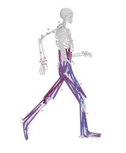

行人物理场模拟
OpenSim

入门
1.软件安装
到OpenSim的 下载页面 进行软件的下载，安装好双击桌面图片便可看到软件界面。
2.导入模型
点击菜单栏中File->Open Model…，从安装目录中选择Models文件夹，可以看到里面有很多个子文件夹，那些是OpenSim自带的模型。我们点开其中的Gait2392_Simbody 文件夹，选中gait2392_simbody.osim并点击Open,这样我们就导入了一个模型。
这是一个人体下肢的模型，参照一个身高1.8米、体重75千克的成年人。它共有19块骨骼，92块肌肉（可在左侧Navigator中查看每块骨骼和肌肉）。
3.加载动作
要想让模型动起来，首先要加载运动文件。
点击菜单栏中File->Load Motion…,选择Gait2392_Simbody文件夹下的Tutorial1子文件夹，选中normal.mot然后点击Load，加载正常步态的运动文件。此时可以在动作控制栏中看到动作名称，并且导航窗口中多了一个Motions分支。
Python
通过 conda 安装：
conda install opensim-org::opensim
强化学习
conda create -n opensim-rl -c kidzik opensim python=3.6.1
conda activate opensim-rl
conda install -c conda-forge lapack git
pip install git+https://github.com/stanfordnmbl/osim-rl.git
python
测试代码：
from osim.env import ProstheticsEnv
env = ProstheticsEnv(visualize=True)
observation = env.reset()
for i in range(200):
o, r, d, i = env.step(env.action_space.sample())